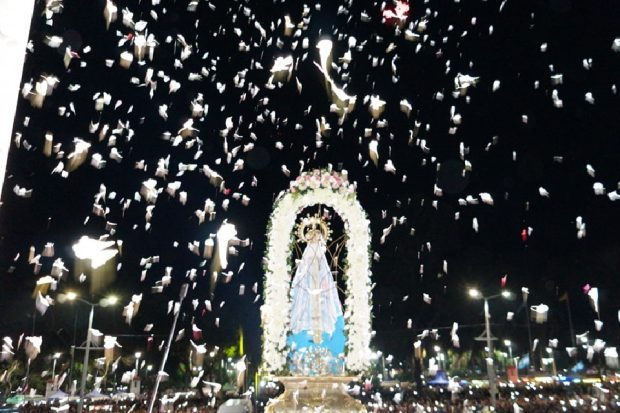
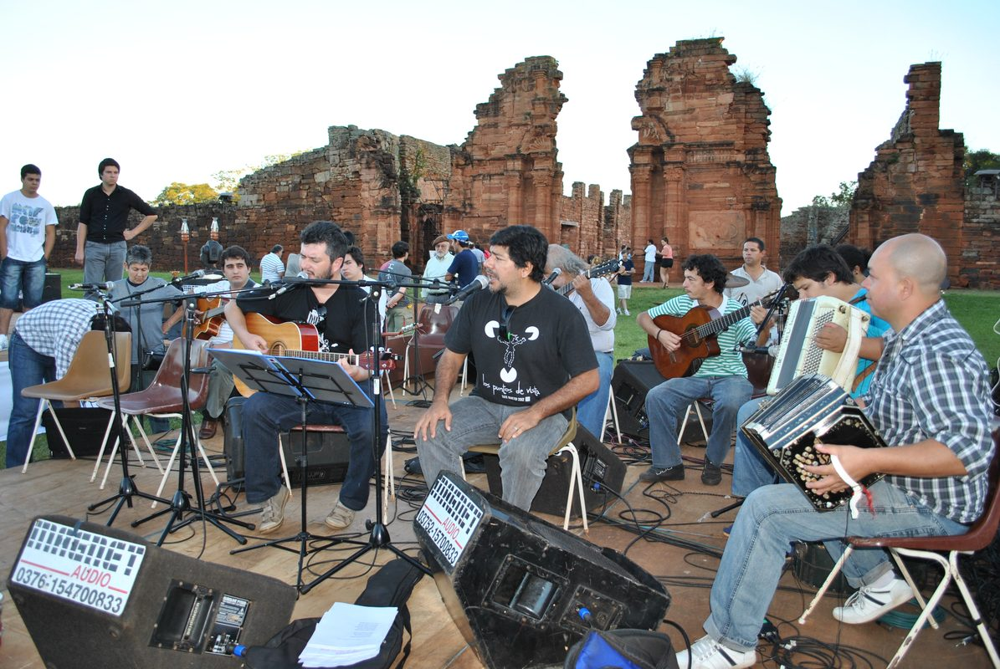

Origen del Patronazgo

El patronazgo de la Virgen de Itatí sobre la Provincia de Corrientes no fue un decreto administrativo que llegó desde arriba: fue el reconocimiento oficial de algo que el pueblo ya había decidido siglos antes. Desde los primeros tiempos de la evangelización franciscana, la comunidad de Itatí y las poblaciones vecinas del Paraná habían elegido espontáneamente a "la Señora de Itatí" como su intercesora principal ante Dios, su protectora en las tormentas del río y en las guerras que asolaron la región a lo largo de los siglos XVII, XVIII y XIX.
La formalización eclesiástica del patronazgo fue un proceso gradual. El hito más importante fue la Coronación Canónica de la imagen, concedida por el Papa León XIII en 1900, que equivale a un reconocimiento pontificio de la preeminencia de esta advocación en la región. La elevación del templo a Basílica Menor por el Papa Pío XII en 1943 reforzó este reconocimiento. Finalmente, la Conferencia Episcopal Argentina, en consonancia con la devoción popular y la tradición histórica, reconoció a la Virgen de Itatí como patrona de la diócesis y de la provincia de Corrientes, título que hoy luce en el escudo de la ciudad y en el ceremonial oficial de la provincia.
Es significativo que el patronazgo de la Virgen de Itatí sobre Corrientes sea paralelo al de la Virgen de Luján sobre toda la Argentina. Así como los argentinos de todo el país reconocen a Nuestra Señora de Luján como Madre y Patrona de la nación, los correntinos reconocen a la Virgencita de Itatí como la Madre propia de su tierra, la que conoce el acento del guaraní y el rumor del Paraná.
— Dicho popular correntino
Identidad Cultural y Mariana de Corrientes

Pocas provincias argentinas tienen una identidad tan marcada y coherente como Corrientes, y la Virgen de Itatí es uno de sus pilares más sólidos. La provincia, cuyo territorio estuvo en el corazón de las Misiones Jesuíticas y Franciscanas que evangelizaron el Litoral, conserva hasta hoy una religiosidad popular que mezcla con naturalidad la teología católica con la cosmovisión guaraní: el respeto por el agua y la tierra como dones de Dios, la importancia de la comunidad sobre el individuo, la expresión de la fe a través de la música y la danza.
El chamamé, música tradicional de Corrientes declarada Patrimonio Cultural Inmaterial de la Humanidad por la UNESCO en 2021, tiene una relación íntima con la devoción a la Virgen de Itatí. Decenas de chamames populares invocan a "Mamá Itatí", la describen desde el río, narran peregrinaciones o expresan el amor del pueblo correntino a su patrona. Esta fusión de la devoción mariana con la música folk regional es una de las expresiones más genuinas de inculturación religiosa en la Argentina.
El escudo de la ciudad de Itatí muestra a la Virgen en su posición iconográfica clásica: de pie, con el Niño en brazos, sobre el barranco blanco del Paraná. La imagen de la Virgencita aparece en altares domésticos de prácticamente todos los hogares correntinos, en estampitas que viajan en billeteras y mochilas, en tatuajes de los jóvenes del nordeste y en los murales que decoran las paredes de los barrios populares de Corrientes capital. Es, en el sentido más amplio de la palabra, un símbolo de identidad.
Las Fiestas Patronales del 16 de Julio
El 16 de julio es el día central del año litúrgico correntino. La fiesta de Nuestra Señora de Itatí coincide en el calendario con la de Nuestra Señora del Carmen —una concurrencia que los fieles interpretan como signo de la doble gracia mariana sobre el Litoral—, y se celebra con una intensidad que convierte al pequeño municipio de Itatí en uno de los lugares más concurridos de la Argentina durante esa jornada.
Los preparativos comienzan días antes: grupos de peregrinos parten a pie desde Corrientes capital, desde Resistencia, desde Formosa y desde pueblos del interior de Corrientes, caminando bajo el sol o la lluvia de julio para llegar al santuario con los pies en la tierra, en un gesto de humildad y entrega que es la esencia misma de la peregrinación. Muchos cumplen promesas hechas en momentos de enfermedad, accidente o angustia existencial: "Si me salvás, voy a Itatí caminando".
El día 16, la celebración litúrgica principal —una Misa solemne presidida por el obispo de Corrientes— se celebra ante la imagen de la Virgen. Por la tarde, la procesión con la imagen recorre las calles del pueblo entre cánticos, rezos y el sonido de los acordeones que tocan chamamés marianos. La imagen, vestida con su manto más rico, avanza sobre las andas cargada por los portadores de turno, mientras miles de manos se extienden para tocarla o acercarle flores. Al atardecer, la explanada del santuario se ilumina con las velas de los fieles que rezan en silencio, mirando el río.
Patrona de los Navegantes del Paraná
El Paraná —cuyo nombre en guaraní significa "como el mar"— es el eje fluvial en torno al que se organizó durante siglos la vida económica, social y espiritual del Litoral argentino. Sus pescadores, transportistas fluviales, isleños y los trabajadores de los puertos fluviales de Corrientes y Posadas tienen en la Virgen de Itatí a su intercesora por antonomasia. La relación entre el santuario y el río es geográficamente obvia —la basílica se levanta sobre el mismo barranco desde el que se domina la corriente del Paraná—, pero va mucho más allá de la simple proximidad física.
Antes de zarpar, los pescadores del Paraná acostumbran a hacer la señal de la cruz y decir: "Virgencita de Itatí, cuidanos". Cuando regresan de la pesca, muchos dejan una ofrenda en la pequeña capilla del muelle local: un pez, una flor, una vela. Las familias de los isleños del Paraná —que viven en las islas de arena y vegetación que forman el delta y la llanura aluvial— tienen altares domésticos con la imagen de Itatí como pieza central, generalmente acompañada de estampitas de otros santos populares del nordeste.
Esta devoción marinera recuerda a otras advocaciones marianas ligadas al mar y a los ríos en la tradición católica universal: la Virgen del Carmen (patrona de los marineros de mar), la Stella Maris, Nuestra Señora de Guadalupe del mar. En el caso de Itatí, es el río lo que estructura el patronazgo: el mismo Paraná que puede ahogarse en sus crecidas y regalar vida en sus aguas tranquilas es el escenario en el que la Virgen ejerce su protección maternal sobre quienes trabajan sus orillas.
Raíces Guaraníes del Patronazgo
El patronazgo de la Virgen de Itatí no puede entenderse sin comprender la profundidad de la cultura guaraní en el Litoral. El pueblo guaraní —cuya lengua sigue siendo hablada en la actualidad en grandes partes de Corrientes, Paraguay y el nordeste argentino como segunda lengua oficial y como idioma de uso doméstico— tenía antes de la llegada de los misioneros una cosmovisión religiosa centrada en la búsqueda de la "Tierra Sin Mal", un paraíso mítico al que se llegaba mediante el camino de la virtud comunitaria y el ritual sagrado.
Cuando los frailes franciscanos llegaron con la imagen de la Virgen, los guaraníes reconocieron en ella algo que encajaba con sus propias categorías religiosas: una figura femenina sagrada, protectora y maternal, asociada a la vida, a la generosidad y al bien. La devoción mariana se injertó en el árbol de la espiritualidad guaraní y creció con su savia. De ahí que la Virgen de Itatí sea venerada no solo como una advocación católica convencional, sino como una presencia espiritual que habla dos idiomas —el del catecismo y el de la cosmovisión guaraní— y que tiende un puente entre las dos grandes tradiciones que conforman la identidad del nordeste argentino.
Hoy, las comunidades mbya guaraní y ñandeva de Corrientes, aunque practican formas diversas de espiritualidad, reconocen a la Virgen de Itatí como parte del paisaje sagrado de su tierra. En algunos pueblos del interior de Corrientes, la celebración del 16 de julio incluye elementos de la cultura guaraní —músicas, danzas, comidas tradicionales— que dan al patronazgo mariano una dimensión de integración cultural que pocas advocaciones latinoamericanas pueden igualar.
Seguí explorando la Virgen de Itatí
Este artículo forma parte de una serie completa sobre la advocación itateña:
Artículo Principal
Historia, origen y devoción popular de la Virgen de Itatí.
Ir al hub →El Santuario
La basílica de Itatí y la visita de Juan Pablo II en 1987.
Leer artículo →Oraciones
Oraciones, novena y jaculatorias a la Virgen de Itatí.
Rezar →Arte e Iconografía
La imagen original del siglo XVII y el arte devocional guaraní.
Ver artículo →